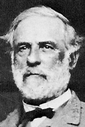

|

|

|
|
|
Robert Edward Lee was born on January 19, 1807, at
"Stratford Hall," Virginia, the fifth child of Henry
"Light-Horse Harry" Lee and Ann Hill Carter Lee. His father,
a Revolutionary War hero and later governor of Virginia,
left home when Robert was six and never returned. With few
financial resources, the family settled on a career in the
army for Robert. Political connections helped secure an
appointment to West Point in 1825.
Lee completed four years at the academy without any
demerits and graduated second in the class of 1829. Apart
from his exceptional academic record and conduct, he also
exhibited qualities of leadership. Cadets referred to him as
the "Marble Model"--a nickname that probably reflected some
envy as well as admiration. Just under six feet tall,
handsome, and with black hair and brown eyes, Lee cut a
striking figure. He entered the Engineer Corps as a second
lieutenant on July 1, 1829.
More than a decade and half passed before Lee saw a
battlefield. Promotions to first lieutenant and captain
punctuated this long stretch of peacetime service. In June
1831, Lee married Mary Anna Randolph Custis, the only
daughter of George Washington Parke Custis, himself the
grandson of Martha Washington. Mary Anna and Lee would share
a 39-year marriage that produced four daughters and three
sons. Lee took seriously the ties to Washington, whom he
sought to emulate throughout his life. The Confederate
people later would often compare the two Virginians, viewing
Lee and his Army of Northern Virginia much as the American
colonists had viewed Washington and the Continental Army.
On May 13, 1846, the United States declared war on
Mexico. Between March and September 1847, Lee served on the
staff of Winfield Scott during a brilliant campaign from
Vera Cruz to Mexico City. Lee performed exemplary service
and impressed his superiors--none more so than Scott, who
came away from Mexico filled with admiration for the young
officer.
In the 1850s, Lee held the superintendency of the United
States Military Academy from 1852-1855 and later served as
lieutenant colonel of the 2nd Cavalry in Texas. In
late-October 1859, he chanced to be in Washington when John
Brown attacked Harpers Ferry. Summoned to the War Department
on October 17th, Lee proceeded to Harpers Ferry with a
detachment of Marines and the next morning captured Brown.
By the time of Lee's promotion to colonel of the 1st
Cavalry on March 16, 1861, seven southern states had
seceded. Confederates fired on Fort Sumter on April 12th,
and Abraham Lincoln issued a call on the 15th for 75,000
volunteers to suppress the rebellion. On April 18th, Lee was
offered command of the United States army being raised to
put down the rebellion. He declined with the explanation
that he could not take the field against the southern
states. "Save in the defense of my native State," he wrote
to Winfield Scott, "I never desire again to draw my sword."
In late April, Lee accepted appointment as major general
of Virginia's state forces and shortly thereafter
transferred to the Confederate army. He was made a full
general on August 31, 1861, ranking third in seniority among
Confederate generals. Lee's first year in command, which
included duty in western Virginia and along the South
Atlantic coast, yielded no dramatic victories and created
the impression that he was a timid commander. In early March
1862, he became military adviser to President Jefferson
Davis in Richmond, capital of the Confederacy. On May 31st,
Joseph E. Johnston, who commanded the Confederate army
defending Richmond, was wounded in the battle of Seven
Pines. Lee took his place the next day, an appointment that
provoked a mixed reaction. Many Confederates approved, but
others doubted Lee's ability. A member of Lee's staff
recalled that some southern newspapers predicted that with
Lee in charge "our army would never be allowed to fight."
Lee immediately sought to take the initiative.
Reinforcements under Thomas J. "Stonewall" Jackson from the
Shenandoah Valley boosted his army's strength to more than
85,000. Between June 25th and July 1st, Lee and McClellan
fought the Seven Days battles. The Confederates pushed
McClellan's army southward, away from Richmond and toward
the James River. Lee's victory was not a masterpiece. His
plans had been too complicated, and the Confederates
suffered more than 20,000 casualties to McClellan's 16,000.
Yet Lee's first major campaign as a field commander lifted
civilian spirits across the Confederacy and greatly enhanced
his reputation.
Lee reorganized the Army of Northern Virginia after the
Seven Days, dividing its infantry between Stonewall Jackson
and James Longstreet. The revamped army defeated Union
General John Pope at the battle of Second Bull Run (or
Manassas) on August 28-30, an engagement that tallied more
than 9,000 Confederate and 16,000 Federal casualties. Since
taking command in June, Lee had restored the Confederacy's
eastern military frontier to where it had been in April
1861. His decisive leadership and victories won praise from
across the Confederacy. A colonel from Georgia reflected
this attitude, observing on September 5, 1862, that "Genl
Lee stands now above all Genls in Modern History."
After Second Bull Run, Lee decided to take the war out of
Virginia into the United States. The Army of Northern
Virginia, a ragged force some 55,000 strong, crossed the
Potomac on September 4-7. George B. McClellan, reinstated
after Pope's defeat, opposed Lee on September 17th in the
campaign's climactic battle of Antietam. Lee's army had
suffered from severe straggling and desertion while in
Maryland, leaving only about 35,000 men to face McClellan's
80,000. During a day of savage combat that ended with an
uneasy stand-off, more than 10,000 Confederates and 12,500
Federals fell, making Antietam the bloodiest day in United
States history. The Army of Northern Virginia retreated to
the Potomac on the night of the 18th.
The Maryland campaign ended a three-month drama that had
begun with the Seven Days. Although turned back at Antietam,
Lee had crafted an overall Confederate success. His
victories had driven major enemy forces from Virginia,
raised Confederate civilian morale, sent tremors through the
North, and laid the foundation for a memorable bond between
himself and his soldiers.
A victory at Fredericksburg on December 13, 1862,
increased public confidence in Lee. This unusual winter
campaign pitted 75,000 Confederates against more than
125,000 Federals under General Ambrose E. Burnside, who had
replaced McClellan. At one point in the battle, an admiring
Lee watched his veterans drive back the Federals. Turning to
James Longstreet, he said in an even voice, "It is well this
is so terrible! we should grow too fond of it!" The battle
claimed 12,653 northern and 5,309 southern casualties.
Behind the lines in the Confederacy, the victory spread
optimism and heightened faith in Lee.
In late April 1863, General Joseph Hooker, Burnside's
successor, commenced a new Union offensive along the
Rappahannock River that ended with the battle of
Chancellorsville. Lee had detached half of Longstreet's
troops to southern Virginia, leaving him with about 60,000
men to oppose Hooker's 120,000. Lee reacted to Hooker's
movements with a series of daring decisions that involved
dividing his outnumbered force three times. Four days of
fighting commenced on May 1st, at the end of which Hooker
retreated to the north bank of the Rappahannock. Utterly
dominating Hooker psychologically, Lee had wrested victory
from circumstances that would have undone most generals. He
also lost more than 12,500 men--among them Stonewall
Jackson, who died on May 10th after being wounded on the
evening of May 2nd.
Chancellorsville uplifted the Confederate people, who
made Lee their unquestioned military idol, and sent waves of
disappointment rippling across the North. It also completed
the process by which the Army of Northern Virginia became
almost fanatically devoted to Lee. In language echoed by
countless others, a Georgia soldier described this deep
attachment: "Wherever he leads they will follow. Whatever he
says do, can and must be done."
The next test for Lee came on northern soil. His army,
with Longstreet back, marched northward in June 1863
numbering 75,000 men. By the end of June, Confederates had
penetrated well into Pennsylvania. The greatest battle of
the war opened on July 1st just west of Gettysburg.
Confederates carried the field on the first day, then
continued their offensive during the next two days. Fighting
raged at such places as the Peach Orchard and Little Round
Top on July 2nd, and the battle closed on July 3rd with the
famous Confederate attack known as Pickett's Charge. During
the three days, more than 23,000 Federals and at least
25,000 Confederates fell. Many critics have pointed to
Gettysburg as proof that Lee's aggressiveness sometimes
overcame his better judgment. Others have argued that
several subordinates performed poorly and frustrated Lee's
plans. Lee typically took full responsibility for the
defeat. In the wake of Pickett's Charge, he told a
subordinate, "Never mind General, all this has been my
fault--it is I that have lost this fight."
Nearly ten months passed before Lee faced another serious
Union offensive. In the spring of 1864, General Ulysses S.
Grant assumed command of operations in Virginia. His
presence raised hopes among northerners that they finally
had a champion who could vanquish Lee. The Confederate
people held an equally firm belief that Lee would triumph
against Grant. The Army of Northern Virginia mustered about
65,000 men to face roughly 120,000 Federals in what would be
called the Overland campaign.
Six weeks of unprecedented fury opened when Lee and Grant
tested each other on May 5-6 in the battle of the
Wilderness. Two days of combat felled more than 18,000
Federals and 11,000 Confederates. Unlike previous Federal
generals in Virginia, Grant ignored his losses and pressed
southward. The armies fought again during May 8-21 in the
battles of Spotsylvania Court House, piling up another
18,000 Federal and 12,000 Confederate casualties. By June 1,
the armies had shifted southeast to the vicinity of Cold
Harbor. More than 50,000 Federals struck Lee's
well-engineered positions on June 3rd. Confederates lost
just 1,500 men while inflicting 7,500 casualties. On June
12th, Grant began a movement that fooled Lee completely. The
Federals crossed the James River and hastened toward
Petersburg, where on June 15-18 a series of disjointed
assaults failed to take the city. Once certain that Grant
had crossed the river, Lee shuttled troops to the Petersburg
defenses.
The Overland campaign ended on June 18 as the armies
settled into their lines around Petersburg for a siege that
would last more than nine months. The final period of the
war offered scant good news to Lee and his army. Although
many Confederates took heart at Lee's appointment as
general-in-chief of all national forces on February 6, 1865,
the promotion came too late to have any practical effect. On
March 25, Lee made a final unsuccessful attempt to break
Grant's encircling grip. Federals turned Lee's right flank
at Five Forks a week later, and on the night of April 2-3
Confederates abandoned the Richmond-Petersburg lines.
A week-long retreat westward from Richmond and Petersburg
ensued. Lee hoped to join Joseph Johnston's army in North
Carolina, but Grant's pursuit denied him an opening. On
April 9th, hemmed in by powerful northern forces, Lee
remarked, "There is nothing left me to do but to go and see
General Grant, and I would rather die a thousand deaths."
The war's two most famous generals met in the parlor of
Wilmer McLean's home in Appomattox Court House that day.
Grant extended generous terms, Lee accepted them, and the
two men signed the document of surrender.
Nearly four months passed between Lee's surrender and the
arrival of an offer that would define the work of his last
years. In August 1865, he became president of Washington
College in Lexington, Virginia. He proved to be an able
educator who improved the faculty, increased the size of the
student body, and broadened the curriculum by adding courses
in science and engineering to the traditional offerings in
classical subjects.
Plagued by various physical ailments during the postwar
years, Lee was stricken on September 28, 1870, with a
stroke. He lingered for two weeks, uttering an average of
just one word a day, until he died peacefully on October
12th.
Source: Joan Waugh, ed., Facts on File Encyclopedia of American
History: Civil War and Reconstruction, 1856 to 1869 (New York: Facts on
File, 2003), 205-207.
|